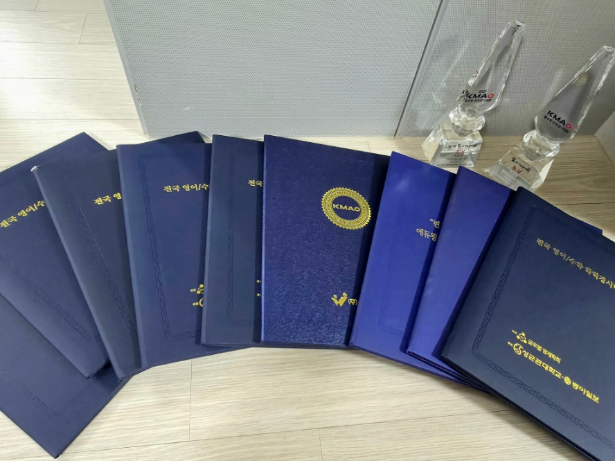

최근 대형 맘카페를 중심으로 흥미로운 논란이 일었다. '학원 뺑뺑이'나 수십 장의 연산 문제집 없이, 전국 단위 수학 경시대회 상을 휩쓸었다는 한 초등학생의 사연 때문이다. "도대체 문제집을 하루에 몇 권 풀었냐", "어느 유명 대치동 학원에 다니냐"라는 질문에 "문제집은 거의 안 풀고 개념만 시각적으로 익혔다"라는 답변이 달리자, "말이 안 된다", "타고난 영재 아니냐"라며 학부모들 사이에서 갑론을박이 벌어진 것이다.

조봉한 박사의 수학을 배운 학생의 경시대회 수상 이력 / 깨봉수학 제공
이 학생의 수학 학습법은 기초 수학 개념을 시각적으로 이해하는 이른바 '수학 머리 학습법'으로 배운 것으로 알려졌다. '수학 머리 학습법'은 조봉한 박사가 개발한 신개념 학습법으로, 15개 이상의 특허를 받아 어려운 수학 개념도 쉽게 이해시키는 독창적인 학습 방식을 통해 학부모와 학생들 사이에서 큰 인기를 끌고 있다. 현재 조봉한 박사 유튜브 채널의 구독자 수는 47만 명을 넘어섰으며, 조봉한 박사가 운영하는 깨봉수학의 누적 학습자 또한 10만 명을 넘어선 것으로 알려졌다.

대기업 임원에서 수학 교육 혁신가로 변신한 조봉한 박사 / 깨봉수학 제공
서울대학교 계산통계학과 졸업, 미국 서던캘리포니아대학교(USC) AI 전공 석·박사, 오라클·하나금융그룹(CIO)·삼성화재 부사장 등 화려한 이력을 자랑하는 조 박사. 그가 50살이 되던 해에 안정적인 대기업 임원직을 내려놓고 교육 콘텐츠 기업 '이쿠얼키(깨봉수학)'를 창업한 계기는 다름 아닌 그의 초등학생 딸 때문이었다. 수학을 맹목적인 암기 과목으로 여기며 고통받는 딸을 보며, 그는 큰 충격을 받았다. 조 박사는 "AI 시대에 기계가 가장 잘하는 '공식 암기'와 '단순 계산'을 인간이 똑같이 훈련하는 것은 무의미하다"라고 판단했다. 기계가 대체할 수 없는 인간 고유의 직관과 사고를 통한 문제 해결력을 키우는 진짜 수학이 필요하다고 느낀 것이다.

조봉한 박사 주요이력 / 깨봉수학 제공
조 박사가 고안한 '깨봉수학'의 핵심은 철저히 시각화 및 언어화된 개념 원리 학습이다. 기존의 주입식 교육처럼 구구단이나 공식을 무작정 외우게 하지 않는다. 대신 곱하기를 '더하기의 확장'이나 '직사각형의 면적' 같은 시각적 자료와 언어적 해석으로 뇌에 각인시켜, 이미지와 의미만으로도 개념이 가진 원리를 직관적으로 꿰뚫어 보게 한다. 이 독창적인 학습법은 수학 개념과 학습 방식에 관해서만 15개 이상의 특허를 취득하며 그 우수성이 입증됐다.
깨봉수학 콘텐츠 특허 중 일부 / 깨봉수학 제공
맘카페를 달궜던 '경시대회 싹쓸이'의 비밀도 바로 이 지점에 있다. 조 박사는 "원리를 정확히 꿰뚫고 있는 아이는 처음 보는 변형 문제 앞에서도 당황하지 않는다"라고 설명한다. 기존 방식대로 유형별 문제 풀이를 암기한 학생들은 경시대회 수준의 복합적이고 낯선 문제를 만나면 쉽게 포기한다. 반면, 깨봉수학을 통해 수의 본질과 연산의 원리를 '자기 것'으로 만든 학생들은 스스로 문제를 분해하고 단순화하여 해결책을 찾아낸다는 것이다. 무의미한 기계적 문제 풀이의 반복 대신 근본적인 '문제 해결력'을 기르는 데 집중했더니, 아이러니하게도 수학 경시대회 입상이라는 성과가 자연스럽게 따라왔다.
그런 그가 50살이 되던 해에 삼성화재 부사장직을 내려놓고 교육회사를 창업한 뒤 '깨봉수학'을 개발했다. 안정적인 대기업 임원직을 포기하고 교육 현장에 뛰어든 계기는 다름 아닌 그의 딸이었다.
딸이 초등학교 3학년 때 수학을 싫어하고 어려워하는 모습을 보며, 조 박사는 기존의 주입식, 암기 위주의 수학 교육 방식이 잘못되었다고 판단했다. 그는 딸에게 수학의 원리를 쉽고 재미있게 전달하는 방법을 고민하다 시각화 자료와 애니메이션, 스토리텔링을 활용한 독창적인 콘텐츠를 개발하게 되었다.
조 박사는 "아이들의 학습 목표를 단순히 경시대회 수상이나 대입 수능으로만 설정하면 90% 이상의 학생이 수학을 시작하기도 전에 지쳐버린다"라며, "수학을 배우는 진짜 의미는 우리 아이들이 AI 시대에 마주할 수많은 문제들을 스스로 해결하는 능력을 기르는 데 있다"라고 강조했다. 아울러 "진짜 수학으로 문제 해결력이 길러지면 성적은 자연스레 뒤 따라온다"라며 덧붙였다.
기계가 정답을 찾아주는 시대, 아이들에게 진정으로 필요한 것은 질문을 던지고 핵심을 파악하는 힘이다. 한 맘카페에서 시작된 작은 논란은 단순한 해프닝을 넘어, 대한민국 수학 교육이 앞으로 나아가야 할 명확한 방향을 묻는 중요한 화두가 되고 있다. 수학을 배우는 진정한 의미와 본질에 대해 학부모들의 관심과 인식 전환이 그 어느 때보다 절실한 시점이다.